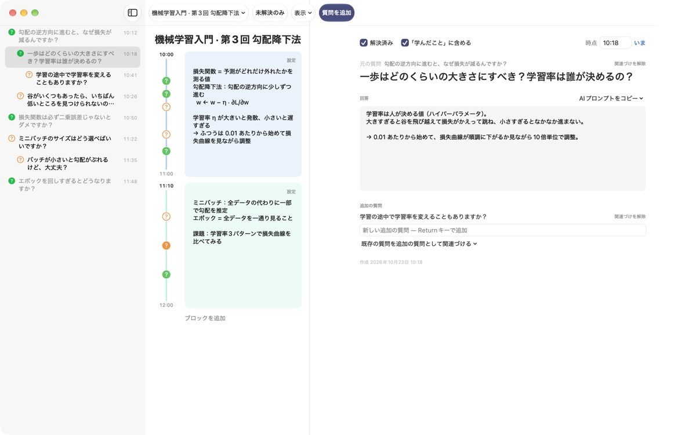
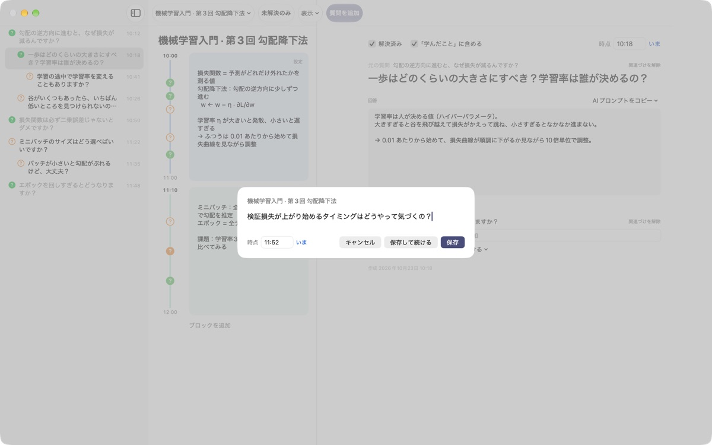
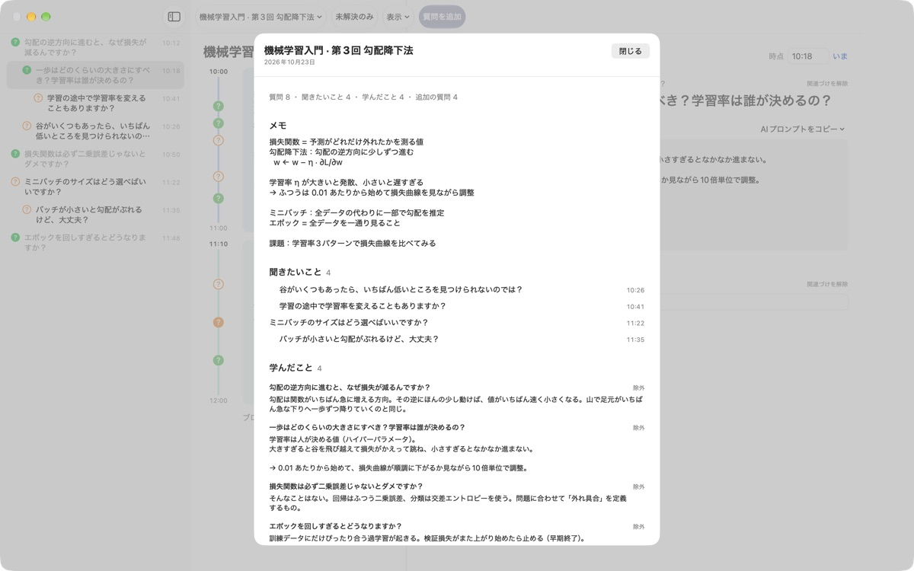
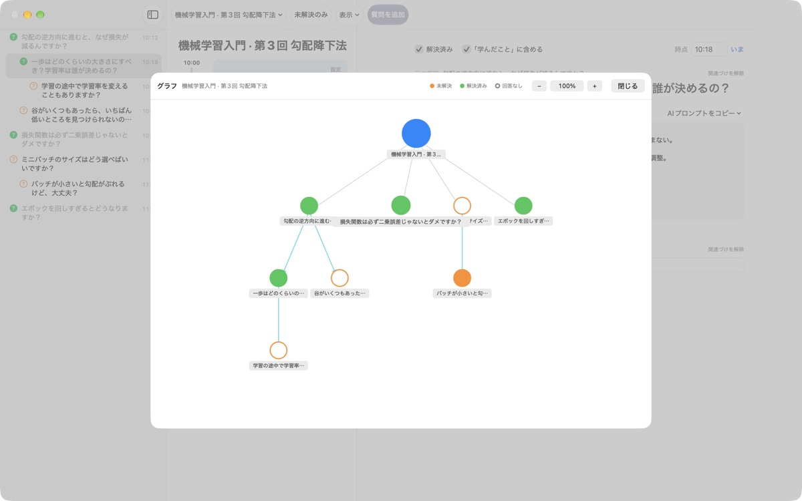

講義中の「なぜ？」を
そのままにしない
⌘⇧N を押して一行書くだけで、その時刻のメモの横に質問が残ります。講義は聞き続けて、答えはあとで探せば大丈夫です。
macOS 14以降に対応。アカウント不要で、データはこのMacの中だけに保存されます。

ここで試してみる
機械学習の講義を受けている途中です。質問を書いて保存すると、その時刻のブロックの横に ? が付きます。時刻をブロックの外にすると、その時刻を含むブロックが新しくできます。
講義が終わったとき、その疑問を覚えていますか？
「あれ、なんでだろう」と思った瞬間にも、講義は先へ進みます。ノートの隅に書いた「?」は、どの説明から出てきたのか分からなくなり、答えが見つからないまま残ります。LectureQは質問をその時点のメモと一緒に留めておき、答えにたどり着くまで手放しません。
講義を止めずに質問を残せる
ツールバーの 質問を追加 か ⌘⇧N で入力画面を開きます。時刻は自動で入り、Return で保存、⌘Return なら保存してすぐ次の質問を書けます。
質問はその時刻のタイムブロックの横に ? で表示されるので、あとから講義のどの部分で生まれた疑問なのかがすぐに分かります。

答えが見つかれば「学んだこと」に
自分の言葉で答えを書いて解決済みにすると、まとめの「学んだこと」に集まります。まだ解けていない質問は「聞きたいこと」に残るので、次回の講義で聞くリストが自然にできあがります。
質問の詳細にある AIプロンプトをコピー は、講義名とその時点のメモを入れたプロンプトをクリップボードにコピーします。いつものAIサービスに貼り付けるだけです。

考えが広がった道筋が見える
質問から生まれた追加の質問は元の質問の下に字下げで並び、グラフでは矢印でつながります。ノードをクリックすればその質問へすぐ移動します。
学習状況には、講義を受ける前の自分、終えたときになりたい自分、学びたいことを書いておき、見比べることもできます。

始め方は3ステップ
- 1
講義を作る
ツールバー左の講義名メニューから新しい講義を追加します。会話を保存したMarkdownファイルを読み込んでもOKです。
- 2
浮かんだらすぐ書く
⌘⇧Nを押して一行書けば十分。時刻は自動で入ります。 - 3
あとで答えをまとめる
答えを書いて ? をクリックすると解決済みになり、「学んだこと」に集まります。
キーボードショートカット
- ⌘⇧N
- 質問を追加
- Return
- 保存
- ⌘Return
- 保存して続けて書く
- Esc
- キャンセル
- ⌘1
- まとめ：聞きたいこと、学んだこと、メモ
- ⌘2
- グラフ：元の質問と追加の質問のつながり
- ⌘3
- タイムブロック：すべての講義のブロックを時系列で
- ⌘4
- 学習状況
- ⌘+ · ⌘- · ⌘0
- 文字を大きく、小さく、標準サイズに
すべてメニューバーの「表示」メニューにもあります。
すべての機能が無料です
無料
- すばやい質問入力とタイムブロックのメモ
- 追加の質問とグラフ
- まとめ、タイムブロック一覧、学習状況
- 5段階のAIプロンプトをクリップボードにコピー
- 会話のMarkdownを読み込み
開発者を応援する
- 役に立ったら、設定から小さなチップを送れます
- チップを送っても新しく使える機能はありません
送らなくても、すべての機能をそのまま使えます。
広告もアカウントもありません。記録はこのMacの中だけに保存されます。
よくある質問
質問の横の ? の色はどういう意味ですか？
リストでは、オレンジの白抜きの丸がまだ解決していない質問、緑の塗りつぶしの丸が解決した質問です。? をクリックすると切り替わり、ツールバーの 未解決のみ をオンにすると未解決の質問だけが表示されます。タイムブロックの横の ? は、色が解決済みかどうか、塗りつぶしが答えを書いてあることを表します。
タイムブロックはどうやってできますか？
ブロックを追加 を押すとその時刻から新しいブロックが始まり、直前のブロックはその時刻までに調整されます。どのブロックにも入らない時刻に質問を残すと、その時刻を含むブロックが自動でできます。ブロック右上の 設定 から色・開始時刻・長さを変えたり削除したりできます。ブロックを自分で削除した講義では、ブロックは自動でできなくなります。
「解決済み」と「学んだこと」はどう違いますか？
質問の詳細で 解決済み にチェックを入れると、「学んだこと」に含めるかどうかも選べます。「学んだこと」には、解決済みで含めると決めた質問だけが集まります。まとめ画面からも外したり戻したりでき、答えはそのまま残ります。
AIで答えを探すには？
質問の詳細で「回答」の右にある AIプロンプトをコピー から、質問を磨く・答えを探す・答えを問い直す・追加の質問を引き出す・自分の答えを採点してもらう のどれかを選びます。講義名、その時点のメモ、学習状況、元の質問を入れたプロンプトがクリップボードにコピーされます。プロンプトの本文は現在韓国語でコピーされますが、たいていのAIは理解でき、「日本語で答えて」と頼めば日本語で返ってきます。「自分の答えを採点してもらう」は、回答欄に自分の言葉で書いてあるときに使えます。アプリがAIサービスと直接通信することはありません。
会話を保存したMarkdownを読み込めますか？
講義名メニューの Markdownから読み込む… でファイルを選ぶと、新しい講義になります。# タイトル が講義名に、各 ## セクション の最初の質問が元の質問、続く質問が追加の質問になります。ファイルで最初に登場する話者の発言が質問、それ以外の話者の発言は直前の質問の答えになります。元のファイルは変更されません。
質問や講義を削除するには？
質問はリストで右クリックして 削除、講義は講義名メニューの 現在の講義を削除 で削除します。講義を削除すると、その講義の質問とブロックも一緒に消え、元に戻せません。大切な記録は先にバックアップしてください。
データはどこに保存されますか？バックアップは？
すべての記録はこのMacの中だけに保存され、外部には送信されません。バックアップするには、アプリを終了してから ~/Library/Containers/com.lectureq.LectureQ/Data/Library/Application Support/LectureQ/ フォルダを -wal、-shm ファイルごとコピーしてください。アプリが送るのはバージョンや起動した日などの匿名の利用統計だけで、書いた内容は送りません。
文字が小さくて読みにくいです。
⌘+ で大きく、⌘- で小さく、⌘0 で標準サイズに戻ります。85%から200%まで調整でき、設定は保存されます。
どのMacで使えますか？
macOS 14以降で動作します。ソースコードはGitHubのM1zz/LectureQで公開しています。
うまく動かないときはどこに連絡すればいいですか？
アプリの設定（⌘,）からフィードバックを送るか、下のメールアドレスまでお知らせください。macOSのバージョンと、どの操作で問題が起きたかを書いていただけると早く確認できます。
ご質問やご意見は mizzking75@gmail.com までお送りください。